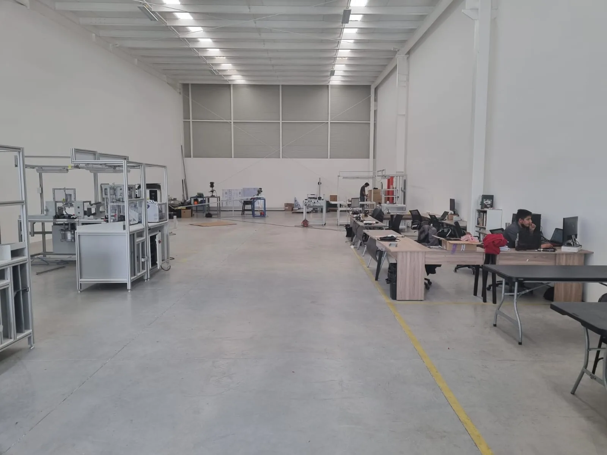
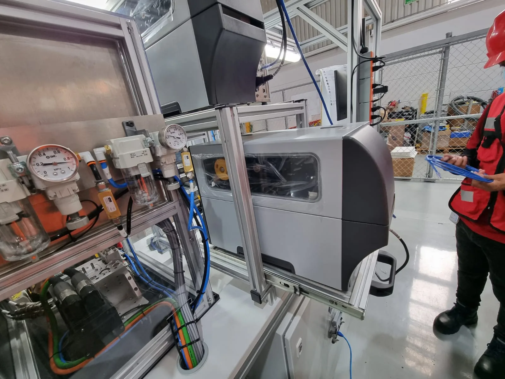

Levantamiento Técnico
Análisis de requerimientos en línea de producción, definición de alcances, ergonomía y tiempos de ciclo.
ESPECIALIDADES E INGENIERÍA
Integramos cuatro áreas de ingeniería bajo un mismo estándar de calidad para fabricar desde componentes de precisión hasta líneas y estaciones automatizadas.
Desarrollamos estaciones de trabajo manuales, semiautomáticas y automáticas, así como el diseño de piezas metálicas y plásticas adaptadas a los requerimientos de cada proceso productivo.

Contamos con taller de maquinados propio en Querétaro para el procesamiento de materias primas y la fabricación de piezas unitarias o en serie con control dimensional.

Realizamos la ingeniería, dimensionamiento, canalización e integración de sistemas eléctricos y neumáticos para estaciones de trabajo y maquinaria industrial.

Integramos sistemas de hardware y software para automatizar procesos, asegurando secuencias confiables, comunicación industrial y seguridad operativa en planta.

MATRIZ DE COMPATIBILIDAD INDUSTRIAL
Nos adaptamos a los estándares instalados en tu planta trabajando con las arquitecturas líderes en automatización, visión y robótica industrial.
Arquitecturas de control industrial, redes de comunicación y sensórica avanzada
Celdas robóticas de ensamble, manipulación, carga/descarga y trabajo colaborativo
FLUJO DE TRABAJO INTEGRAL
Controlamos internamente desde la ingeniería conceptual hasta el maquinado y la puesta en marcha para garantizar tiempos y calidad.
Análisis de requerimientos en línea de producción, definición de alcances, ergonomía y tiempos de ciclo.
Modelado 3D de estaciones y herramentales, validación por elemento finito (FEA) y selección de materiales.
Fabricación en nuestro taller de Querétaro: maquinado CNC, torno, fresa, soldadura MIG/Arco y rectificado.
Armado de gabinetes eléctricos, potencia neumática, pruebas de estanqueidad y programación de PLC/Robots.
Instalación en planta del cliente, pruebas funcionales, ajuste de secuencias y entrega operativa.
DUDAS FRECUENTES DE INGENIERÍA Y COMPRAS
Respuestas claras sobre nuestros alcances de diseño CAD, maquinado en taller propio e integración en planta.